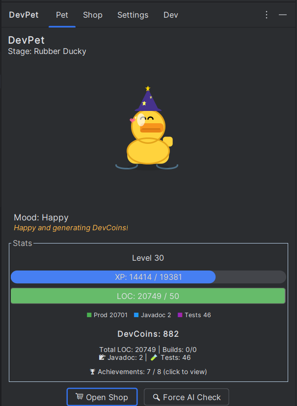
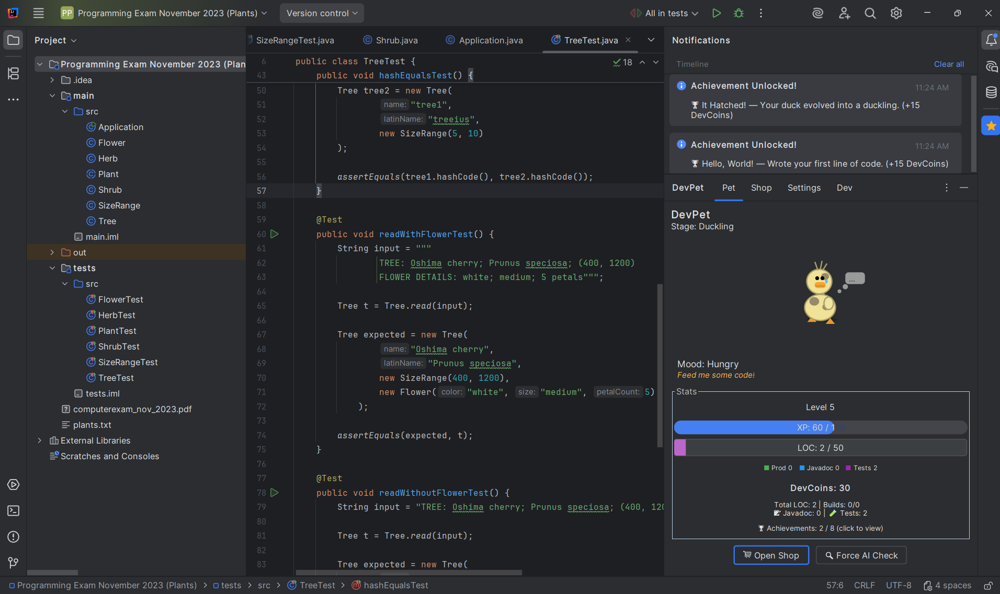
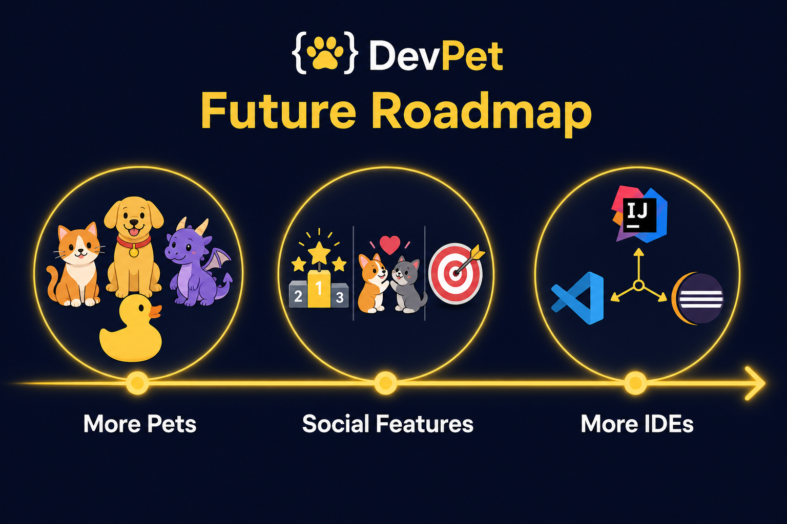

Nurturing better coding habits, one line at a time.



Call to Action: Download DevPet today and hatch your first egg!
GitHub: github.com/Alttrex/HackDelftChallenge
Questions?
Visual: Rubber Ducky waving goodbye, with QR code or repo link.